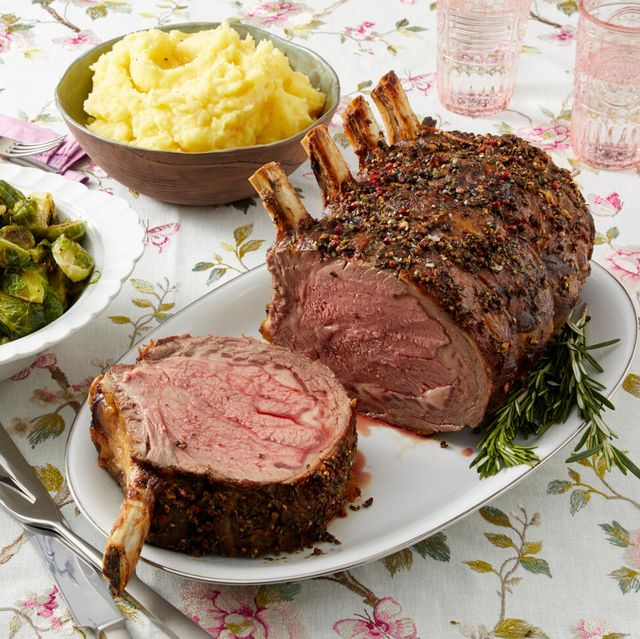

Prime Rib Recipe

Description
Prime rib is usually the center stage when it comes to the holiday season.
It is the king of beef cuts because it is a roast marbled with fat and is juicy
and tender.
Prime rib is also very easy to cook. Start the oven at a high temperature to get a good
browning outside of the roast. Then, cook it at a lower temperature to ensure the
meat in the center doesn't get overcooked.
Ingredients
- 1 (10 pound) standing rib roast, 3 to 7 ribs (estimate serving 2-3 people per rib),
bones cut away from the roast and tied back to the roast with kitchen string
- salt
- freshly ground black pepper
Steps
- Salt the roast and let sit at room temp: Remove the beef roast from the
refridgerator 3 hours before you begin the cooking process. Sprinkle it with salt all over and
let the roast sit, loosely wrapped in butcher paper. Roasts should be brought close to
room temperature before they go into the oven to ensure more even cooking.
- Tie with kitchen string:
If the bones are not already cut by your butcher,
cut the bones away and tie them back onto the roast with kitchen string.
This will make the carving process easier, while still allowing you to stand
the roast on the rib bones while cooking.
- Preheat the oven and season the roast: Preheat your oven to 500 degrees Farenheit.
Pat the roast dry with paper towels and sprinkle salt and pepper all over the roast.
- Place the roast fat-side-up in a roasting pan: Insert an ovenproof meat
thermometer isn't touching a bone.
- Brown the roast at high temperature: Brown the roast at 500 degrees Farenheit
for 15 minutes.
- Lower the oven to 325 degrees Farenheit to finish roasting: Reduce the oven
temperature to 325 degrees Farenheit. To determine total cooking time, allow for
11-12 minutes per pound for rare and 13-15 minutes per pound for medium rare.
Roast in the oven until thermometer registers 115 degrees for rare or 120 degrees for medium
rare, and 130 degrees for medium.
- Let the roast rest: Once the roast has reached the desired temperature
you want, remove it from the oven and place onto a carving board. Cover the roast with foil
and let it rest for 15-30 minutes before carving. The internal temperature of the
roast will continue to rise while the roast is resting.